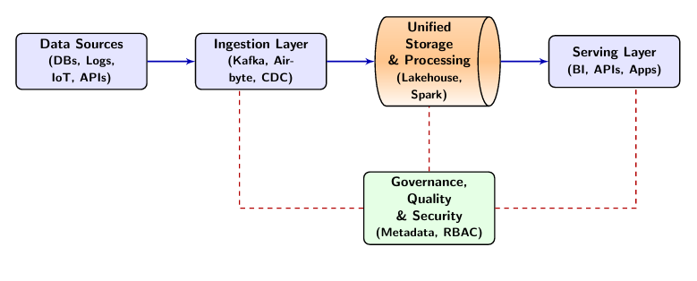
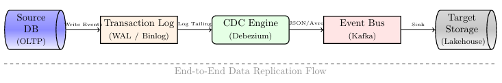
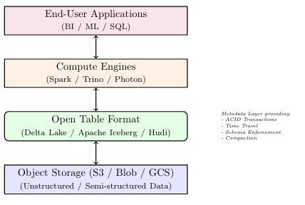
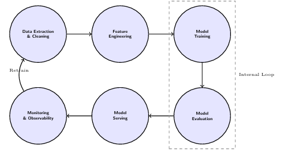
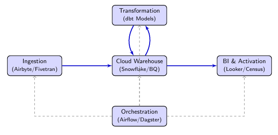
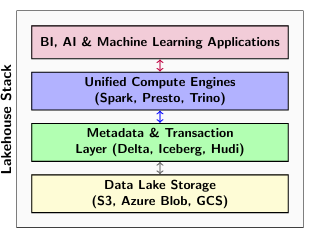
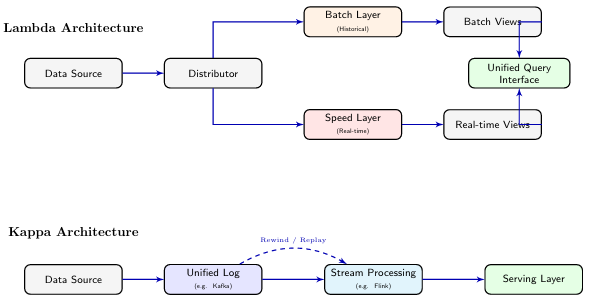
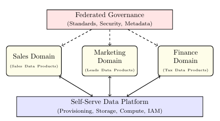

End-to-End Data Solutions
A comprehensive academic exploration of the data lifecycle: from ingestion and unified storage to MLOps and decision-making systems.
1. Introduction
In the contemporary digital landscape, organizations generate and process unprecedented volumes of data from diverse sources, ranging from traditional transactional databases to high-velocity IoT streams and unstructured social media content. End-to-end data solutions represent comprehensive frameworks that integrate all stages of the data lifecycle—from initial collection through storage, processing, analysis, and ultimately to decision-making and action. These solutions are essential for transforming raw data into actionable insights that drive business value, operational efficiency, and competitive advantage in an increasingly data-driven global economy.
The evolution of data architecture has transitioned from siloed, application-specific databases to centralized enterprise data warehouses, and more recently to flexible, distributed data lakes and lakehouses. This evolution reflects the changing nature of data itself, which has grown not only in volume but also in velocity, variety, veracity, and value—the "5 Vs" of Big Data. Modern end-to-end solutions are no longer monolithic; they are composed of modular, interoperable components that scale independently, often leveraging cloud-native technologies and distributed systems.
The complexity of modern data ecosystems demands holistic approaches that address technical, organizational, and governance challenges. End-to-end data solutions must accommodate various data types (structured, semi-structured, and unstructured), support real-time and batch processing paradigms, ensure data quality and reliability, and maintain strict security and privacy standards. Furthermore, they must scale to handle growing data volumes while maintaining performance and cost-effectiveness through sophisticated resource management and optimization techniques.
This chapter explores the architecture, components, and best practices for designing and implementing comprehensive end-to-end data solutions. We examine each layer of the data stack, from ingestion through serving, and discuss the integration of modern technologies including cloud platforms, distributed engines like Apache Spark and Flink, and machine learning frameworks.

2. Historical Foundations and Evolution
The journey toward modern end-to-end data solutions began with the need for structured reporting in the late 20th century. Understanding this history is crucial for appreciating the design decisions embedded in today's frameworks.
2.1 The Era of Mainframes and Silos
In the 1970s and 1980s, data was largely trapped within specific applications. Each system had its own proprietary storage, leading to massive duplication and "islands of information." Reporting was manual and often inconsistent across departments.
2.2 Emergence of the Enterprise Data Warehouse (EDW)
The 1990s saw the rise of the Data Warehouse (DW), a concept popularized by Bill Inmon and Ralph Kimball. The DW aimed to centralize all business data into a single, highly structured relational database optimized for analytical queries (OLAP). This era introduced the ETL (Extract, Transform, Load) paradigm, where data was cleaned and structured *before* landing in the warehouse.
2.3 The Big Data Revolution and Hadoop
By the mid-2000s, the volume of data generated by the web surpassed the capacity of traditional relational databases. Google's seminal papers on the Google File System (GFS) and MapReduce laid the technical foundation for Apache Hadoop. Hadoop enabled the storage and processing of petabytes of data on commodity hardware using the "Data Lake" model—storing raw data in its native format and applying structure only when reading it (Schema-on-Read).
2.4 Cloud-Native and the Lakehouse Era
Modern architectures have moved to the cloud, decoupling compute from storage to enable elastic scaling. We are currently in the era of the Data Lakehouse, which seeks to combine the low-cost, flexible storage of data lakes with the high-performance, ACID-compliant transaction management of data warehouses.
| Feature | Data Warehouse | Data Lake | Data Lakehouse |
|---|---|---|---|
| Data Type | Structured | Any | All Types |
| Schema | Schema-on-Write | Schema-on-Read | Decoupled |
| Cost | High (Proprietary) | Low (Commodity) | Medium |
| Performance | High for SQL | Low for Complex | High for SQL & ML |
| Transactions | Full ACID | No ACID / Limited | Full ACID |
| Use Cases | BI & Reporting | Data Science | Full E2E |
3. Motivation and Scope
The motivation for end-to-end data solutions stems from several critical business and technical drivers. Organizations increasingly recognize data as a strategic asset that, when properly leveraged, can provide significant competitive advantages. However, fragmented data systems, siloed analytics, and inconsistent governance often prevent organizations from realizing this potential.
Key drivers include:
- Operational Efficiency: Automating data flows reduces manual intervention and latency, allowing businesses to react faster to market changes.
- Customer Experience: Real-time data processing enables personalized experiences, such as recommendation engines and dynamic pricing.
- Regulatory Compliance: Centralized governance and lineage tracking are essential for complying with regulations like GDPR and CCPA.
- Innovation: A robust data platform enables data scientists and analysts to experiment rapidly, fostering a culture of innovation.
Traditional data warehousing approaches, while valuable for structured analytical queries, prove insufficient for modern requirements such as real-time analytics, machine learning model serving, and diverse data source integration. The proliferation of data sources—including IoT devices, mobile applications, social media platforms, and external APIs—necessitates flexible, scalable architectures that can ingest and process heterogeneous data streams.
The scope of end-to-end data solutions encompasses Data Integration, Processing Paradigms (batch and stream), Storage Optimization, Analytics/ML (including MLOps), Governance, and Operational Excellence through DataOps practices.
4. Data Sources and Generation
Data sources in modern enterprises exhibit remarkable diversity in format, volume, velocity, and veracity. Understanding the characteristics of different data sources is fundamental to designing appropriate ingestion and processing strategies. The "Three Vs" of Big Data (Volume, Velocity, Variety) have now expanded to include Veracity (data uncertainty) and Value (business utility), all of which must be addressed at the source level.
4.1 Types of Data Sources
Transactional Systems: Operational databases (OLTP systems) generate structured data through business transactions. A key challenge here is minimizing the performance impact of data extraction on these mission-critical systems. Change Data Capture (CDC) mechanisms are preferred over polling.
Application Logs: Applications emit logs containing operational events, errors, and user activities. Log data is typically semi-structured (JSON, XML) or unstructured (plain text) and arrives at high volumes.
IoT and Sensor Data: Internet of Things devices generate continuous streams of telemetry data. This data is characterized by high velocity, potential out-of-order arrival, and time-series nature.
User-Generated Content: Social media platforms and forums produce unstructured text, images, and videos, often requiring specialized pre-processing like NLP or computer vision pipelines.
External Data Sources: Third-party APIs, open data repositories, and data marketplaces provide supplementary information but pose challenges regarding reliability and schema changes.
4.2 Data Generation Patterns
- Continuous Streams: Real-time data flows like stock market tickers and sensor feeds.
- Periodic Batches: Scheduled data exports common in legacy mainframes.
- Event-Driven: Sporadic data generated by user actions (e.g., clicks).
- Request-Response: Data retrieved on-demand via API calls.
5. Data Ingestion Pipelines
Data ingestion represents the first critical stage, responsible for reliably transferring data from source systems to downstream layers. A robust ingestion layer acts as a shock absorber, protecting downstream systems from spikes in data volume.
5.1 Ingestion Patterns
Batch Ingestion: Scheduled bulk transfers. Simple but introduces latency.
Stream Ingestion: Continuous data capture, minimizing "time-to-insight."
Micro-batch Ingestion: Collecting records into small windows (e.g., 5 seconds) before processing, popularized by Spark Streaming.
5.2 Change Data Capture (CDC) Architecture
CDC tracks and propagates changes from source databases without impacting production performance. Modern CDC engines like Debezium tail the database's internal transaction log (WAL/Binlog). This is superior to polling because it captures deletions, has near-zero CPU impact, and captures intermediate state changes.

5.3 Data Quality at Ingestion
Implementing quality checks during ingestion prevents downstream contamination ("shifting left"). Validation techniques include Schema Validation, Semantics Checks, and Freshness SLAs. Bad data can be handled via Dead Letter Queues (DLQ), dropping, or substituting default values.
6. Data Storage Architectures
Selecting appropriate storage technologies constitutes a fundamental architectural decision. Modern data solutions typically employ polyglot persistence, leveraging multiple systems optimized for different workloads.
6.1 Storage Technology Categories
Data Warehouses: Optimized for complex SQL queries across large datasets using MPP architectures and columnar storage.
Data Lakes: Storage repositories for raw data in native formats using low-cost object storage like S3.
Data Lakehouses: A unified architecture providing warehouse-level governance on lake-level storage through metadata layers like Delta Lake or Apache Iceberg.

6.2 Polyglot Persistence
Modern solutions use "Polyglot Persistence"—selecting the storage engine that best fits the access pattern. This includes Document (MongoDB), Key-Value (Redis), Graph (Neo4j), Time-Series (InfluxDB), and Vector (Pinecone) databases.
6.3 Storage Formats and Optimization
Columnar storage formats like Parquet and ORC provide significant performance improvements through Column Pruning, Dictionary Encoding, Run-Length Encoding (RLE), and Predicate Pushdown.
6.4 Storage Tiering
- Hot Tier: Frequently accessed data on high-performance SSDs.
- Warm Tier: Occasionally accessed data on standard object storage.
- Cold Tier: Rarely accessed archival data on low-cost storage (e.g., Glacier).
7. Data Processing and Transformation
Data processing transforms raw ingested data into refined, analytics-ready datasets. Modern frameworks support both batch and stream processing paradigms.
7.1 Distributed Batch Processing: Apache Spark
Spark has become the industry standard for large-scale batch processing. Its architecture is built around RDDs, though modern users primarily use DataFrames. The Catalyst Optimizer and Tungsten Engine ensure efficient physical execution plans.
7.2 Stream Processing: Apache Flink
Flink is a "true" streaming engine processing events one by one with sub-second latency. It ensures Exactly-Once Semantics using snapshotting mechanisms and high-performance state management.
7.3 Workflow Orchestration
Engineering pipelines are defined as Directed Acyclic Graphs (DAGs) in code (Python) using tools like Apache Airflow, Dagster, and Prefect to manage dependencies.

7.4 ETL vs. ELT
The shift to ELT (Extract, Load, Transform) leverages the massive scale of cloud warehouses. Raw data is loaded first, then transformed using SQL-based tools like dbt.
8. Metadata Management and Data Governance
Governance ensures data quality, discoverability, security, and compliance. Modern platforms use "Active Metadata" to drive system behavior.
8.1 Metadata Types
- Technical Metadata: Describes schemas and formats.
- Business Metadata: Provides context via definitions and data stewards.
- Operational Metadata: Captures runtime behavior for observability.
8.2 Advanced Security Architecture
Security must be multi-layered, protecting data at rest, in transit, and during use through RBAC/ABAC models, encryption (AES-256), masking, and auditing.

8.3 Data Contracts and Lineage
Data Contracts: Explicit agreements between producers and consumers regarding schema and quality. Data Lineage: Visualizes data flow to assist in impact and root cause analysis.
9. Data Quality and Reliability
The modern approach emphasizes "shifting left" on quality—catching issues as early as possible. Data quality dimensions include Accuracy, Completeness, Consistency, Timeliness, Validity, and Uniqueness.

10. Analytical Processing Systems
Analytical processing systems enable exploration, reporting, and advanced analytics on processed data. Modern architectures support diverse analytical workloads with varying latency and complexity requirements.
10.1 OLAP Paradigms
ROLAP (Relational OLAP): Queries are executed directly against a relational database. Highly flexible but can be slow for very large datasets without optimized indices.
MOLAP (Multidimensional OLAP): Data is pre-aggregated into "cubes." Provides sub-second response times for known queries but lacks ROLAP's flexibility.
10.2 Real-Time and Interactive Analytics
For modern user-facing dashboards and operational monitoring, sub-second latency is required on billions of rows of fresh data. Real-time OLAP engines like ClickHouse, Druid, and Pinot are optimized for these workloads through sparse indices, bitmap indexing, and decoupled storage.
| Feature | ClickHouse | Apache Druid | Apache Pinot |
|---|---|---|---|
| Ingestion | Batch / Kafka | Streaming (Native) | Streaming (Native) |
| Index Tech | Primary/Sparse | Bitmap / Inverted | Inverted / Star-Tree |
| Best For | Ad-hoc Analytics | Time-Series / Logs | User-Facing Apps |
10.3 The Semantic Layer
A critical emerging component is the Semantic Layer (e.g., dbt Semantic Layer). It abstracts data complexity by defining business metrics (e.g., "Monthly Recurring Revenue") in code, ensuring consistent definitions across the organization.
11. Machine Learning Integration (MLOps)
Modern data solutions seamlessly integrate machine learning workflows, moving from experimental notebooks to robust production systems through MLOps practices focusing on reproducibility and reliability.
11.1 The MLOps Lifecycle
MLOps brings DevOps principles to machine learning, focusing on the end-to-end pipeline: Data Extraction, Feature Engineering, Model Training, Evaluation, Serving, and Monitoring.

11.2 Feature Stores
One of the biggest challenges in ML is the "Training-Serving Skew." Feature Stores bridge this gap by providing an Offline Store (Data Lake) for historical training and an Online Store (Redis/DynamoDB) for low-latency real-time inference predictions.
11.3 ML Observability
Unlike traditional software, ML models degrade over time. Real-time observability systems monitor for Model Drift, Concept Drift, and Data Drift, triggering automated retraining pipelines when performance drops.
11.4 Deployment Patterns
- Batch Inference: Running models on large datasets offline.
- Real-time Inference: Exposing models via REST/gRPC APIs for immediate predictions.
- Edge Deployment: Deploying quantized models on IoT devices to reduce bandwidth.
12. Serving Layer and Decision Systems
The serving layer represents the interface between processed data and end-users or applications.
12.1 Reverse ETL
Traditionally, data flow ended in the warehouse. Reverse ETL operationalizes this data by syncing insights back into operational systems like Salesforce, HubSpot, or Zendesk, empowering frontline teams.
12.2 API Interfaces
GraphQL APIs: Allow applications to query complex, nested data structures in a single request. Data Sharing: Modern warehouses enable zero-copy data sharing between organizations without complex file transfer pipelines.
12.3 Decision Automation
- Recommendation Systems: Dynamically re-ranking content based on real-time behavior.
- Fraud Detection: Blocking suspicious transactions in real-time.
- Dynamic Pricing: Adjusting prices based on demand and inventory.
13. End-to-End Architecture Patterns
Comprehensive architectural patterns guide the design of cohesive data solutions addressing common global challenges.
13.1 Modern Data Stack (MDS)
The "Modern Data Stack" focuses on modularity and cloud-native scalability. It involves managed ingestion (Airbyte), cloud warehousing (Snowflake), SQL-based transformation (dbt), and activation (Reverse ETL).

13.2 Data Mesh
Data Mesh decentralizes data ownership based on four principles: Domain-Oriented Ownership, Data as a Product, Self-Serve Infrastructure, and Federated Governance.
13.3 Lakehouse Architecture
Combines data lake cost-effectiveness with warehouse performance by using open table formats (Delta, Iceberg) directly on object storage, eliminating data staleness.

13.4 Streaming-First (Kappa) Architecture
In Kappa, the "log" (Kafka) is the central source of truth. Reprocessing historical data is handled by replaying the log, eliminating the complexity of Lambda's separate batch/speed layers.

14. Emerging Trends and Generative AI
Understanding emerging trends helps prepare for future requirements and avoid technical debt.
14.1 Generative AI and Agentic Data Engineering
- Autonomous Pipeline Repair: AI agents monitoring observability signals to autonomously deploy patches for common failures.
- Semantic Search (RAG): Using Vector Databases and LLMs to enable natural language queries over data catalogs.
- Automated Enrichement: Leveraging LLMs to generate business descriptions and PII tags automatically.
14.2 Cloud Data FinOps
Cultural practice of managing cloud spend through Unit Economics (measuring "cost per query"), Query Guardrails (auto-killing expensive queries), and Storage Tiering.
15. Practical Case Studies
- Netflix (Keystone Platform): Uses Kafka as the central nervous system, Flink for real-time recommendations, and an S3-based lake for truth.
- Zalando (Data Mesh): Transitioned from a central warehouse to a decentralized model, increasing the velocity of data across hundreds of teams.
- Uber (Michelangelo): A unified platform for ML model operation using a global-scale Feature Store to solve Training-Serving skew.
- MDS in E-commerce: Small teams of 2-3 engineers managing global platforms using Airbyte, Snowflake, and dbt.
16. Data Ethics and Privacy
Modern solutions must be "private by design," complying with global regulations like GDPR and CCPA. A major technical challenge is implementing the "Right to be Forgotten" in immutable Big Data object stores.
- Soft Delete: Marking rows as deleted in the metadata layer.
- Vacuuming: Periodically rewriting Parquet files to physically remove records.
- Differential Privacy: Adding calibrated "noise" to query results to prevent individual identification.
17. Infrastructure as Code and DataOps
DataOps applies DevOps principles to data engineering, treating infrastructure and pipelines as software code.
17.1 Managing with Terraform
IaC tools allow defining an entire environment (warehouses, S3 buckets, IAM roles) in declarative config files, ensuring environment parity and enabling disaster recovery as code.

17.2 CI/CD for Data
Includes automated testing (dbt/Spark unit tests), Blue-Green deployments (deploying to "shadow" schemas), and rollback mechanisms via table time-travel.
18. Performance Benchmarking and Tuning
TPC benchmarks (TPC-H, TPC-DS) provide standard workloads for comparing systems. Tuning distributed engines like Spark requires addressing Data Skew (via salting), Shuffle Partitioning, and the Small Files Problem.
19. Summary and Conclusion
End-to-end data solutions integrate all stages of the data lifecycle. Successful implementation requires holistic design, shift-left quality, and decoupling of architectural components.
| Layer | Core Challenge | Modern Solution |
|---|---|---|
| Ingestion | Velocity, Schema Drift | CDC, Kafka |
| Storage | Scalability vs Cost | Lakehouse, S3 |
| Processing | Latency, Throughput | Spark, Flink |
| Governance | Trust, Compliance | Active Metadata |
As data volume and complexity continue to grow, the ability to build reliable, scalable, and self-serve data platforms will be the defining factor in organizational success.